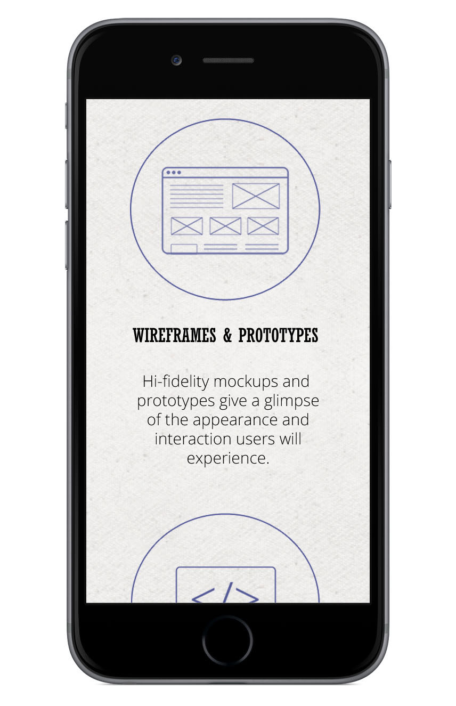

<div class="content">
    <div id="bandf" class="project">
        <p class="p-nav"><a class="change-page prev" href="/tanms">&#8592; prev</a><a class="change-page next" href="/misc">next &#8594;</a></p>
        <h3>Beautiful and Functional Personal Site</h3>
        <ul class="skills-list top">
            <li>Web Design</li>
            <li>Photoshop</li>
        </ul>
        <div class="p-gallery">
            
            
            
        </div>
        <ul class="skills-list bottom">
            <li>Web Design</li>
            <li>Photoshop</li>
        </ul>
        <div class="p-details">
            <p class="p-description">The Beautiful and Functional personal site is a theme I created in my spare time brainstorming ideas for my own personal site. Graphics were created by me using Adobe Photoshop and Illustrator.</p>
        </div>
        <p class="p-nav"><a class="change-page prev" href="/tanms">&#8592; prev</a><a class="change-page next" href="/misc">next &#8594;</a></p>
    </div>
</div>